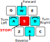
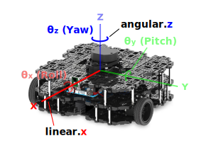

Having completed the steps on the previous page, your robot and laptop should now be paired, and ROS should be up and running. The next thing to do is bring the robot to life!
On this page you'll work through a series of exercises with the TurtleBot3 (aka, the Waffle) in your teams, exploring how the robot works whilst also getting an initial insight into how ROS works too. A number of the exercises here are similar to those that you'll do (or perhaps have already done) individually in simulation for Assignment #1. As you'll soon see, whether you're working with a real robot or a simulation, a lot of the principles are the same for both.
Throughout Lab Assignment #1 you will use a ready-made ROS application called turtlebot3_teleop_keyboard to drive a Waffle around a range of simulated environments. This works in exactly the same way with a real robot in a real world too:
Open up a new terminal instance on the laptop either by using the Ctrl+Alt+T keyboard shortcut, or by clicking the Terminal App icon, we'll refer to this as TERMINAL 1. In this terminal enter the following rosrun command to launch turtlebot3_teleop_keyboard (note that it's exactly the same command as you use in simulation too):
TERMINAL 1:
rosrunturtlebot3_teleopturtlebot3_teleop_key
Robotics Laptop Tip
There's a bash alias for this command to make it quicker to type in future: tb3_teleop!
Follow the instructions provided in the terminal to drive the robot around using specific buttons on the keyboard:

Warning
Take care to avoid any obstacles or other people in the lab as you do this!
Once you've spent a bit of time on this, close the application down by entering Ctrl+C in TERMINAL 1.
ROS applications are organised into packages. Packages are basically folders containing scripts, configurations and launch files (ways to launch those scripts and configurations).
Scripts tell the robot what to do and how to act. In ROS, these scripts are called nodes. ROS Nodes are executable programs that perform specific robot tasks and operations. These are typically written in C++ or Python, but it's possible to write ROS Nodes using other programming languages too.
In the initial setup of the robot on the previous page (Step 3) you simultaneously established a ROS Network ("the ROS Master") and launched a range of different nodes on the robot with a roslaunch command. Then, in Exercise 1 above you launched the turtlebot3_teleop_key node on the laptop:
Command
Context
1
roslaunchtuos_tb3_toolsros.launch
Robot
2
rosrunturtlebot3_teleopturtlebot3_teleop_key
Laptop
The first of the above commands was a roslaunch command, which has the following two parts to it (after the roslaunch bit):
roslaunch{[1]Packagename}{[2]Launchfile}
Part [1] specifies the name of the ROS package containing the functionality that we want to execute. Part [2] is a file within that package that tells ROS exactly what scripts ('nodes') that we want to launch. We can launch multiple nodes at the same time from a single launch file.
The second command was a rosrun command, which has a structure similar to roslaunch:
rosrun{[1]Packagename}{[2]Nodename}
Here, Part [1] is the same as the roslaunch command, but Part [2] is slightly different: {[2] Node name}. Here we are directly specifying a single script that we want to execute. We therefore use rosrun if we only want to launch a single node on the ROS network (turtlebot3_teleop_key in this case, which is a Python script).
The key difference between roslaunch and rosrun then is that with roslaunch we can execute 1 or more nodes at the same time via launch files. Another handy feature of roslaunch is that it will automatically launch the ROS Master if it isn't already running. As illustrated by the "Context" column in the table above, we ran our roslaunch command on the robot, which means that all the specified nodes (defined in the ros.launch file1) and the ROS Master were executed on the robot.
The ROS Master
The ROS Master is a wireless communication network that is established between the robot and laptop (and indeed any other device that we might want to add). The benefit of this then is that it allowed us to run our rosrun command on the laptop, and this was able to invoke changes to the robot (i.e. making it move around) via this wireless ROS communication network.
Exercise 2: Cloning Your Team's ROS Package to the Robot Laptop¶
In the Assignment #2 "Getting Started" tasks that you should have completed earlier you should have created your team's Assignment #2 ROS package and pushed it to GitHub. In this exercise you will now clone it on to the Robotics Laptop and create your first Python ROS node within it.
WiFi
Remember, the Robotics Laptop needs to be connected to the "DIA-LAB" WiFi network in order for the robot and laptop to communicate with one another, but DIA-LAB is an internal network, and you won't be able to access the internet!
Make sure the laptop is now connected to "eduroam" before starting this exercise.
You'll use SSH keys to download your team's ROS package onto the laptop now. You'll need to follow a similar procedure if you end up working on a different laptop during a different lab, or if you happen to delete your package from the laptop that you're working on now. There are some more detailed instruction on how all this works here (TODO), which you should refer to in future lab sessions.
From a terminal instance on the laptop (i.e. TERMINAL 1) navigate to the ~/.ssh folder using the cd Linux Command ("change directory"):
cd~/.ssh
Create a new SSH key on the laptop, using your GitHub email address:
ssh-keygen-ted25519-C"your.email@sheffield.ac.uk"
Replacing your.email@sheffield.ac.uk with your GitHub email address.
You'll then be asked to "Enter a file in which to save the key". This needs to be unique, so enter the name of your ROS package. For the purposes of this example, let's assume yours is called com2009_team999.
You'll then be asked to enter a passphrase. This is how you make your SSH key secure, so that no other teams using the same laptop can access and make changes to your team's package/GitHub repo. You'll be asked to enter this whenever you try to commit/push new changes back to GitHub. Decide on a passphrase and share this with ONLY YOUR TEAM.
Next, start the laptop's ssh-agent:
eval"$(ssh-agent-s)"
Add your SSH private key to the laptop's ssh-agent. You'll need to enter the name of the SSH key file that you created in the earlier step (e.g.: com2009_team999)
ssh-add~/.ssh/com2009_team999
Replacing com2009_team999 with the name of your own SSH key file.
Then, you'll need to add the SSH key to your account on GitHub...
Step 2: Adding the SSH key to your GitHub account¶
On the laptop, copy the SSH public key that you created in the previous steps to your clipboard.
Do this from a terminal on the laptop, using cat:
cat~/.ssh/com2009_team999.pub
replacing com2009_team999 with the name of your SSH key file.
The content of the file will then be displayed in the terminal... copy it from here.
Tips
To copy text from inside a terminal window use Ctrl+Shift+C
You could also open the file in VS Code and copy it from there:
code~/.ssh/com2009_team999.pub
Go to your GitHub account in a web browser. In the upper-right corner of any page, click your profile photo, then click Settings.
In the "Access" section of the sidebar, click SSH and GPG keys.
Click New SSH key.
Enter a descriptive name for the key in the "Title" field, e.g. com2009_dia-laptop1.
Select Authentication Key as the "Key Type."
Paste the text from your SSH Public Key file into the "Key" field.
With your SSH keys all set up, you can now clone your ROS package onto the laptop.
There's a "Catkin Workspace" on each of the robot laptops and your package must reside within this workspace. (You'll learn more about Catkin Workspaces in Assignment #1.)
From a terminal on the laptop, navigate to the Catkin Workspace src directory:
cd~/catkin_ws/src
Go to your ROS package on GitHub. Click the Code button and then select the SSH option to reveal the SSH address of your repo. Copy this.
Head back to the terminal instance on the laptop to then clone your package into the catkin_ws/src/ directory using git:
gitclone{REMOTE_SSH_ADDRESS}
Where {REMOTE_SSH_ADDRESS} is the SSH address that you have just copied from GitHub.
Tip
To paste text into the Linux terminal window use Ctrl+Shift+V
Run Catkin Build to make sure that any resources within your package that need to be compiled (custom ROS messages, etc.) are compiled onto the laptop so that they can be used locally:
catkinbuildcom2009_team999
...again, replacing com2009_team999 with your team's package name.
Then, re-source your environment:
source~/.bashrc
Note
This will all become very familiar with you once you've worked through Assignment #1!
You should then be able to commit and push any updates that you make to your ROS package while working on the laptop back to your remote repository using the secret passphrase that you defined earlier!
Make sure the laptop is now connected back to "DIA-LAB" in order to continue with the rest of the exercises.
Our Waffles have some pretty sophisticated sensors on them, allowing them to "see" the world around them. Let's now see what our robot sees, using some handy ROS tools.
There shouldn't be anything running in TERMINAL 1 now, after you closed down the Teleop node (using Ctrl+C) at the end of the previous exercise. Return to this terminal and launch the rqt_image_view node:
TERMINAL 1:
rosrunrqt_image_viewrqt_image_view
Questions
We're using rosrun here again, what does this mean?
Why do we have to type rqt_image_view twice?
A new window should open. Maximise this (if it isn't already) and then select /camera/color/image_raw from the dropdown menu at the top-left of the application window.
Live images from the robot's camera should now be visible! Stick your face in front of the camera and see yourself appear on the laptop screen!
Close down the window once you've had enough. This should release TERMINAL 1 so that you can enter commands in it again.
The camera on the robot is quite a clever device. Inside the unit is two separate image sensors, giving it - effectively - both a left and right eye. The device then combines the data from both of these sensors and uses the combined information to infer depth from the images as well. Let's have a look at that in action now...
In TERMINAL 1 enter the following command:
TERMINAL 1:
roslaunchtuos_tb3_toolsrviz.launch
This will launch an application called RViz, which is a handy tool that allows us to visualise the data from all the sensors on-board our robots. When RViz opens, you should see something similar to the following:
The strange wobbly sheet of colours in front of the robot is the live image stream from the camera with depth applied to it at the same time. The camera is able to determine how far away each image pixel is from the camera lens, and then uses that to generate this 3-dimensional representation. Nice eh!
Again, place your hand or your face in front of the camera and hold steady for a few seconds (there may be a bit of a lag as all of this data is transmitted over the WiFi network). You should see yourself rendered in 3D in front of the robot!
In RViz you may have also noticed a lot of red dots scattered around the robot. This is a representation of the laser displacement data coming from the LiDAR sensor (the black device on the top of the robot). The LiDAR sensor spins continuously, sending out laser pulses into the environment as it does so. When a pulse hits an object it is reflected back to the sensor, and the time it takes for this to happen is used to calculate how far away the object is.
The LiDAR sensor spins and performs this process continuously, so a full 360° scan of the environment can be generated. This data is therefore really useful for things like obstacle avoidance and mapping. We'll explore this in more detail later.
For now, move your hand around the robot and see if you can see it being detected by the LiDAR sensor. Move your hand up and down and consider at what height the LiDAR sensor is able to detect it.
Then, move your hand closer and further away and watch how the red dots move to match this.
Open up a new terminal instance (TERMINAL 2) and launch the turtlebot3_teleop_keyboard node as you did in Exercise 1. Watch how the data in the RViz screen changes as you drive the robot around a bit.
Once you've had enough, close down RViz (click the "Close without saving" button, if asked) and stop the Keyboard Teleop node by entering Ctrl+C in TERMINAL 2.
Using rosrun and roslaunch, as we have done so far, it's easy to end up with a lot of different processes or ROS Nodes running on the network, some of which we will interact with, but others may just be running in the background. It is often useful to know exactly what is running on the ROS network, and there are a number of ways to do this.
There shouldn't be anything running in Terminals 1 or 2 now, so return to TERMINAL 1 and use the rosnode command to list the nodes that are currently running on the robot:
TERMINAL 1:
rosnodelist
You should see a list of at least 7 items.
We can visualise the connections between the active nodes by using a ROS node called rqt_graph. Launch this as follows:
TERMINAL 1:
rosrunrqt_graphrqt_graph
In the window that opens, select Nodes/Topics (active) from the dropdown menu in the top left.
What you should then see is a map of all the nodes in the list from above (as ovals), and arrows to illustrate the flow of information between them. This is a visual representation of the ROS network!
Items that have a rectangular border are ROS Topics. ROS Topics are essentially communication channels, and ROS nodes can read (subscribe) or write (publish) to these topics to access sensor data, pass information around the network and make things happen.
A ROS Robot could have hundreds of individual nodes running simultaneously to carry out all its necessary operations and actions. Each node runs independently, but uses ROS communication methods to communicate and share data with the other nodes on the ROS Network.
Publishers and Subscribers: A ROS Communication Method¶
ROS Topics are key to making things happen on a robot. Nodes can publish (write) and/or subscribe to (read) ROS Topics in order to share data around the ROS network. Data is published to topics using ROS Messages. We were actually publishing messages to a topic when we made the robot move using the Teleop node in the previous exercises.
Much like the rosnode list command, we can use rostopic list to list all the topics that are currently active on the ROS network.
Close down the rqt_graph window if you haven't done so already. This will release TERMINAL 1 so that we can enter commands in it again. Return to this terminal window and enter the following:
TERMINAL 1:
rostopiclist
A much larger list of items should be printed to the terminal now. See if you can spot the /cmd_vel item in the list.
This topic is used to control the velocity of the robot ('command velocity').
Let's find out more about this using the rostopic info command.
TERMINAL 1:
rostopicinfo/cmd_vel
This should provide an output similar to the following:
The /cmd_vel topic currently has no publishers (i.e. no other nodes are currently writing data to this topic).
The /turtlebot3_core node is subscribing to the topic. The /turtlebot3_core node turns motor commands into actual wheel motion, so it monitors the topic (i.e. subscribes to it) to see when a velocity command is published to it.
The type of message used by the /cmd_vel topic is called: geometry_msgs/Twist.
The message type has two parts: geometry_msgs and Twist. geometry_msgs is the name of the ROS package that this message belongs to and Twist is the actual message type.
We have just learnt then, that if we want to make the robot move we need to publish Twist messages to the /cmd_vel topic.
We can use the rosmsg command to find out more about the Twist message:
TERMINAL 1:
rosmsginfogeometry_msgs/Twist
From this, we should obtain the following:
geometry_msgs/Vector3 linear
float64 x
float64 y
float64 z
geometry_msgs/Vector3 angular
float64 x
float64 y
float64 z
The motion of any mobile robot can be defined in terms of its three principal axes: X, Y and Z. In the context of our TurtleBot3 Waffle, these axes (and the motion about them) are defined as follows:
In theory then, a robot can move linearly or angularly about any of these three axes, as shown by the arrows in the figure. That's six Degrees of Freedom (DOFs) in total, achieved based on a robot's design and the actuators it is equipped with. Take a look back at the rosmsg info output in TERMINAL 1. Hopefully it's a bit clearer now that these topic messages are formatted to give a ROS Programmer the ability to ask a robot to move in any one of its six DOFs.
geometry_msgs/Vector3 linear
float64 x <-- Forwards (or Backwards)
float64 y <-- Left (or Right)
float64 z <-- Up (or Down)
geometry_msgs/Vector3 angular
float64 x <-- "Roll"
float64 y <-- "Pitch"
float64 z <-- "Yaw"
Our TurtleBot3 robot only has two motors, so it doesn't actually have six DOFs! The two motors can be controlled independently, which gives it what is called a "differential drive" configuration, but this still only allows it to move with two degrees of freedom in total, as illustrated below.

It can therefore only move linearly in the x-axis (Forwards/Backwards) and angularly in the z-axis (Yaw).
Making a robot move with ROS is simply a case of publishing the right ROS Message (Twist) to the right ROS Topic (/cmd_vel). In some of the previous exercises above you used the Keyboard Teleop node to drive the robot around, a bit like a remote control car. In the background here all that was really happening was that the Teleop node was converting our keyboard button presses into velocity commands and publishing these to the /cmd_vel topic.
In reality, robots need to be able to navigate complex environments autonomously, which is quite a difficult task, and requires us to build bespoke applications. We can build these applications using Python, and we'll look at the core concepts behind this now by building a simple node that will allow us to make our robot a bit more "autonomous". What we will do here forms the basis of the more complex applications that you will learn about in Assignment #1 and implement in Assignment #2 to bring a real robot to life!
You will create your first ROS node inside your team's com2009_team999 ROS package, which you should have cloned to the laptop earlier on. This package should now correctly reside within the Catkin Workspace on the laptop's filesystem. Navigate to this from TERMINAL 1 using the roscd command:
TERMINAL 1:
roscdcom2009_team999/
Replacing com2009_team999 accordingly.
Then, use the cd command to move into the src directory that should already exist within your package:
TERMINAL 1:
cdsrc/
In here, create a Python file called simple_move_square.py using the touch command:
TERMINAL 1:
touchsimple_move_square.py
You'll need to change the execution permissions for this file in order to be able to run it later on. You'll learn more about this in Assignment #1 but, for now, simply run the following command:
TERMINAL 1:
chmod+xsimple_move_square.py
Now we want to edit this file, and we'll do that using Visual Studio Code (VS Code):
TERMINAL 1:
code.
Note
Don't forget to include the . at the end there, it's important!!
Once VS Code launches, open up the simple_move_square.py file, which should be visible in the file explorer on the left-hand side of the VS Code window. Paste the following content into it:
simple_move_square.py
#!/usr/bin/env python3importrospy# (1)!fromgeometry_msgs.msgimportTwist# (2)!frommathimportsqrt,pow,pi# (15)!movement="state1"# "state2, state3 etc..."transition=Truerospy.init_node("move_waffle",anonymous=True)# (3)!rate=rospy.Rate(10)# (4)!pub=rospy.Publisher('/cmd_vel',Twist,queue_size=10)# (5)!vel=Twist()# (6)!rospy.loginfo(f"The node has been initialised...")timestamp=rospy.get_time()# (7)!whilenotrospy.is_shutdown():# (8)!elapsed_time=rospy.get_time()-timestamp# (9)!iftransition:# (10)!timestamp=rospy.get_time()transition=Falsevel.linear.x=0.0vel.angular.z=0.0print(f"Moving to state: {movement}")elifmovement=="state1":# (11)!ifelapsed_time>2:movement="state2"transition=Trueelse:vel.linear.x=0.05vel.angular.z=0.0elifmovement=="state2":# (12)!ifelapsed_time>4:movement="state1"transition=Trueelse:vel.angular.z=0.2vel.linear.x=0.0pub.publish(vel)# (13)!rate.sleep()# (14)!
rospy is the ROS client library for Python. We need this so that our Python node can interact with ROS.
We know from earlier that in order to make a robot move we need to publish messages to the /cmd_vel topic, and that this topic uses Twist messages from the geometry_msgs package. This is how we import that message, from that package, in order to create velocity commands in Python (which we'll get to shortly...)
Before we do anything we need to initialise our node to register it on the ROS network with a name. We're calling it "move_waffle" in this case, and we're using anonymous=True to ensure that there are no other nodes of the same name already registered on the network.
We want our main while loop (when we get to that bit) to execute 10 times per second (10 Hz), so we create a rate object here which will be used to control the rate of the main loop later...
Here we are setting up a publisher to the /cmd_vel topic so that the node can write Twist messages to make the robot move.
We're instantiating a Twist message here and calling it vel (we'll assign velocity values to this in the while loop later on). A Twist message contains six different components that we can assign values to. Any idea what these six values might represent?
What time is it right now? (This will be useful to compare against in the while loop.)
We're entering the main while loop now. This rospy.is_shutdown() function will read False unless we request for the node to be stopped (by pressing Ctrl+C in the terminal). Once it turns True the while loop stops.
Here we're comparing the time now to the time the last time we checked, to tell us how much time has elapsed (in seconds) since then. We'll use that information to decide what to do...
The "transition" state is used to stop the robot (if necessary), and check the time again.
In "state1" we set velocities that will make the robot move forwards (linear-X velocity only). If the elapsed time is greater than 2 seconds however, we move on to "state2".
In "state2" we set velocities that will make the robot turn on the spot (angular-Z velocity only). In this case, if the elapsed time is greater than 4 seconds, we move back to "state1".
Regardless of what happens in the if statements above, we always publish a velocity command to the /cmd_vel topic here (i.e. every loop iteration).
We created a rate object earlier, and we use this now to make sure that each iteration of this while loop takes exactly the right amount of time to maintain the rate of execution that we specified earlier (10 Hz).
Here we're importing some mathematical operators that might be useful...
Mathematical Operation
Python Implementation
\(\sqrt{a+b}\)
sqrt(a+b)
\(a^{2}+(bc)^{3}\)
pow(a,2)+pow(b*c,3)
\(\pi r^2\)
pi*pow(r,2)
Click on the icons above to expand the code annotations. Read these carefully to ensure that you understand what's going on and how this code works.
Now, go back to TERMINAL 1 and run the code.
Note
Make sure the robot is on the floor and has enough room to roam around before you do this!
TERMINAL 1:
rosruncom2009_team999simple_move_square.py
Observe what the robot does. When you've seen enough, enter Ctrl+C in TERMINAL 1 to stop the node from running, which should also stop the robot from moving.
As the name may suggest, the aim here is to make the robot follow a square motion path. What you may have observed when you actually ran the code is that the robot doesn't actually do that! We're using a time-based approach to make the robot switch between two different states continuously:
Moving forwards
Turning on the spot
Have a look at the code to work out how much time the robot will currently spend in each state.
The aim here is to make the robot follow a 0.5m x 0.5m square motion path. In order to properly achieve this you'll need to adjust the timings, or the robot's velocity, or both. Edit the code so that the robot actually follows a 0.5m x 0.5m square motion path!
Simultaneous Localisation and Mapping (SLAM) is a sophisticated tool that is built into ROS. Using data from the robot's LiDAR sensor, plus knowledge of how far the robot has moved2 the robot is able to create a map of its environment and keep track of its location within that environment at the same time. IN the exercise that follows you'll see easy it is to implement SLAM on the real robot.
Exercise 7: Using SLAM to create a map of the environment¶
In TERMINAL 1 enter the following command to launch all the necessary SLAM nodes on the laptop:
TERMINAL 1:
roslaunchturtlebot3_slamturtlebot3_slam.launch
Robotics Laptop Tip
This command is also available as an alias: tb3_slam!
This will launch RViz once again, where you should now be able to see a model of the Waffle from a top-down view surrounded by green dots representing the real-time LiDAR data. The SLAM tools will already have begun processing this data to start building a map of the boundaries that are currently visible to the Waffle based on its location in the environment.
Note
To begin with your robot may just appear as a white shadow (similar to the left-hand image below). It may take some time for the robot to render correctly (like the right-hand image) as the SLAM processes and data communications catch up with one another.
This can sometimes take up to a minute or so, so please be patient! If (after a minute) nothing has happened, then speak to a member of the teaching team.
Return to TERMINAL 2 and launch the turtlebot3_teleop_keyboard node again. Start to drive the robot around slowly and carefully to build up a complete map of the area.
Tip
It's best to do this slowly and perform multiple circuits of the whole area to build up a more accurate map.
Once you're happy that your robot has built up a good map of its environment, you can save this map using a node called map_saver from a package called map_server:
First, create a new directory within your team's ROS package on the laptop. We'll use this to save maps in. Open up a new terminal instance (TERMINAL 3) and navigate to the root of your team's ROS package with roscd again:
TERMINAL 3:
roscdcom2009_team999
Create a directory in here called maps:
TERMINAL 3:
mkdirmaps/
Navigate into this directory:
TERMINAL 3:
cdmaps/
Then, use rosrun to run the map_saver node from the map_server package to save a copy of your map:
TERMINAL 3:
rosrunmap_servermap_saver-f{map_name}
Replacing {map_name} with an appropriate name for your map. This will create two files:
a {map_name}.pgm
a {map_name}.yaml file
...both of which contain data related to the map that you have just created.
The .pgm file can be opened using an application called eog on the laptop:
TERMINAL 3:
eog{map_name}.pgm
Return to TERMINAL 1 and close down SLAM by pressing Ctrl+C. The process should stop and RViz should close down.
Close down the Keyboard Teleop node in TERMINAL 2 as well if that's still running.
Exercise 8: Pushing Changes to Your ROS Package Back to GitHub¶
Having completed the above exercises your team's ROS package should now contain a new ROS Node called simple_move_square.py, a new directory called maps, and a couple of map files within this. You can commit these changes to your repo now using Git, and then push these to GitHub. While the files themselves aren't particularly important for Assignment #2, this will at least illustrate the process for pushing changes from the laptop in future.
WiFi
Once again, make sure the laptop is now connected to "eduroam" in order to be able to access the internet.
Head back to TERMINAL 3 and make sure that you are located in the root of your team's package:
roscdcom2009_team999/
Check the status of your Git repo to identify the changes that have been made:
gitstatus
Stage all the changes that have been made:
gitadd.
Then commit them:
gitcommit-m"Getting started in the lab with the Waffles"
Finally, push these to GitHub:
gitpushoriginmain
Getting Started Exercises complete!
Continue onto the next page now for the shutdown procedures that you need to follow at the end of each lab session...